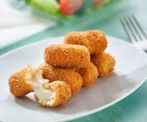

Croquetas

Description
The perfect snack, if only it didn't take so long to prepare them... Croquetas are amazing, it's a mix of bechamel, with ham, warm and deep fried. I mean...
Ingredients
- Milk
- Flour
- Onions
- Garlic
- Meat (ham, chicken...) or other alternatives (boletus, pepper). Be creative!
- Breadcrumbs
- Eggs
- Frying oil
Steps
- Start by finely chopping all ingredients, as you want a rather smooth filling. Alternatively, you could blend everything later, but some people like having some pieces in there
- In a pan, stir fry the garlic and onion until transparent. Add your main ingredient until cooked
- Add some flour, depending on the amount of ingredients you have. Around 100g should be enough for 2-3 portions. Cook for a few minutes until it starts to brown
- Add some milk and stir until you reach a smooth texture. Your texture should be liquid but creamy. This is the trick of the recipe, since you'll need to try until you reach the consistency that you like. Bear in mind that it will get more solid when cold. If you add too much milk, you can correct by adding a bit of flour. Alternatively, you can use broth
- Let the dough cool for a few hours. Room temperature is enough, but you could put it in the fride as well
- Once it's cool, using two spoons, take a bit of the dough, give it the characteristic shape (an elongated sphere)
- Cover the croquetas with flour, then beaten egg, and finally breadcrumbs, as many other breaded recipes. You can freeze or fry directly
- In a pan with a lot of hot oil, deep fry for about 3-5 minutes or until golden. Croquetas are decilious while warm, but some people also prefer when the leftover is cold